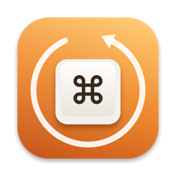

KeyhabitSupport
Answers to common questions are below. If yours isn’t, email help@fitztoppicks.com with your Mac model and macOS version.
Getting started
How do I open it?
Hold ⌘ in any app for about a second and that app’s shortcuts appear. Let go to close them, or click the overlay to keep it open and search, by name (“dup”) or by keys (“shift cmd s” or “⇧⌘S”). You can also choose Show Shortcuts from Keyhabit’s menu bar item. Settings › General picks the key (⌘, ⌥ or ⌃) and how long to hold it.
Why does it need Accessibility?
macOS lets an app read another app’s menus only with the Accessibility permission. Keyhabit’s welcome window has a button that opens the right place in System Settings: turn on Keyhabit there. The window turns green by itself once it’s allowed.
An app shows no shortcuts.
Some apps draw their own menus, which macOS doesn’t share with other apps, so Keyhabit can’t list them. With Pro you can still keep notes for any app in the Library.
Coach and practice
When does a nudge appear?
With Pro, when you pick a menu command with the mouse and it has a shortcut, a small note near the pointer shows the shortcut for next time. Choosing with the keyboard never nudges. A shortcut stops nudging once you’ve typed it 5 times more than you’ve clicked it, and you can mute any one in the Library. Settings › Coach turns nudges off.
How do practice rounds work?
Choose Practice… from the menu bar item and pick an app. A round has 10 of its shortcuts: press the keys for the one shown. While you practice, the window catches the keys, so a shortcut like ⌘Q does nothing. The ones you miss, or keep clicking instead of typing, come back more often.
Keyhabit Pro
What’s free, and what does Pro add?
Free: hold ⌘ for any app’s shortcuts, with search. Pro adds click nudges, practice rounds, pins and notes, the Library, and cheat sheets as a PDF, a printout or Markdown. It’s a one-time purchase on Gumroad, with no subscription.
Where do I enter my license key?
Click Keyhabit’s menu bar item, choose Settings…, open the Pro tab, paste the key from your Gumroad receipt and click Activate.
How do I get updates?
Keyhabit checks for updates on its own; you can also choose Check for Updates… from its menu bar item. Updates are free.
Is it on the Mac App Store?
No. Mac App Store apps run in Apple’s App Sandbox, which doesn’t allow reading other apps’ menus, so Keyhabit is sold only directly, signed with a Developer ID and notarized by Apple.
Purchases
How do I get a refund?
Gumroad handles payment. Reply to your Gumroad receipt or email help@fitztoppicks.com.
Do I have to pay again on another Mac?
No. One license key works on up to 3 of your Macs. Download the app again from your Gumroad receipt or library and enter the same key.